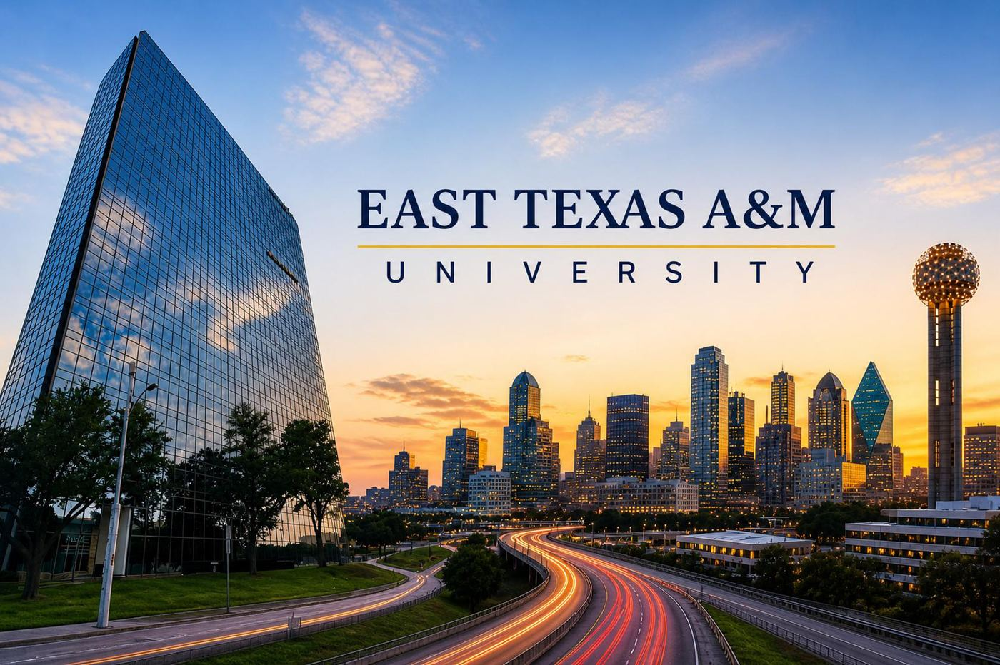
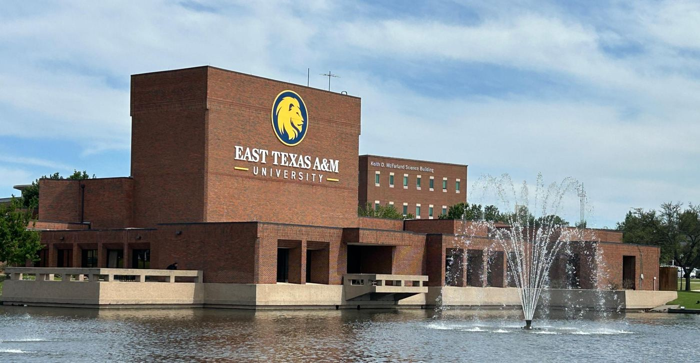

왜 텍사스 학교가 다섯 곳이나 되나요
이 과정의 진학처 20곳 중 5곳이 텍사스 주립대입니다. 가장 오래된 진학처인 이스트 텍사스 A&M이 2011년부터 현지 교수진이 도착 프로그램을 직접 진행해 온 곳이고, 댈러스(DFW)·샌안토니오·휴스턴 등 텍사스 주요 도시마다 파트너 학교가 있습니다.
비용 면에서도 이유가 있습니다. 텍사스 주요 주립대는 연간 $1,000 이상 경쟁 장학금을 받으면 주 내 거주자(In-State) 학비가 적용되어 연 US$13,000~20,000이 줄어듭니다. 이 과정의 장학금 트랙이 텍사스 학교와 잘 맞는 이유입니다.


사진: 2027학년도 입학설명회 자료
텍사스 5개 대학 비교
← 옆으로 밀어서 보세요 →
| 대학명 | 도시 | 공인영어 | 대학교양 | 내신 | 학비 | 기숙사·식비 | 연간 합계 |
|---|---|---|---|---|---|---|---|
| 이스트 텍사스 A&M 대학교 (ETAMU) | 커머스 | 면제 | 15학점 / 2.0 이상 | 면제 | $18,216 | $9,808 | $28,024 |
| 노스텍사스대학교 (UNT) | 덴턴 | DET 100 | 16학점 / 2.5 이상 | 면제 | $22,237 | $18,955 | $41,192 |
| 텍사스대학교 샌안토니오 (UTSA) | 샌안토니오 | DET 95 | 15학점 / 2.5 이상 | 2.5/4.0 | $27,598 | $15,670 | $43,268 |
| 휴스턴대학교 (UH) | 휴스턴 | DET 105 | 15학점 / 2.5 이상 | 면제 | $27,776 | $14,400 | $42,176 |
| 텍사스주립대학교 (TXST) | 샌마코스 | DET 105 | 15학점 / 2.5 이상 | 면제 | $25,080 | $13,330 | $38,410 |
텍사스 A&M 시스템 소속 · ELC 진학생이 가장 많이 거쳐 간 학교
댈러스 근교의 대형 주립대학 · DET 100
UT 시스템의 샌안토니오 캠퍼스 · 내신 2.5 확인
미국 4대 도시 휴스턴의 주립대학 · DET 105
오스틴과 샌안토니오 사이 · DET 대학 중 비용 부담이 적은 편
DFW 공항에 내리면
ETAMU와 UNT는 댈러스 포트워스(DFW) 국제공항에서 픽업이 시작됩니다. 공항에서 학교 버스로 캠퍼스까지 이동하고, 국제처 오리엔테이션·기숙사 입실·학생증·월마트 장보기까지 첫날에 정리합니다. UTSA(샌안토니오)도 같은 방식으로 정착 서비스가 진행됩니다.
- DFW 국제공항 도착·픽업
- 학교 버스로 캠퍼스 이동
- 국제처 방문·오리엔테이션
- 기숙사 입실 지원
- Walmart 방문·생활용품 구입
학교별 진행 순서는 현지 도착·정착 서비스, 장학금·In-State 학비는 장학금·비용 절감에 정리했습니다.
토플면제교육원 더 보기: 과정 전체 안내 · 고3·졸업생 안내 · 재수생 안내 · 검정고시 안내 · 대학생·편입 안내 · 대학 20곳 비교표 · 파트너 대학 9곳 · SUNY 진학 가이드 · UC 편입 경로 · 현지 정착 서비스 · 장학금·비용 절감 · 용어 풀이
아직 중·고등학생이라면 중·고등 유학 안내와 세인트폴 대치 아카데미가 앞 단계입니다.
텍사스 주립대 진학 상담
희망 도시(댈러스·샌안토니오·휴스턴 등)와 전공을 남겨 주세요.
텍사스 학교 중 요건과 비용이 맞는 곳을 골라 안내해 드립니다.
- 모집 45명 선착순 — 마감 전 상담을 권합니다
- 영어 성적이 없어도 지원 가능 여부 확인
- 대학별 비용·장학금 절감 방법까지 함께 안내